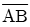
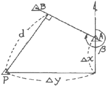
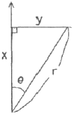
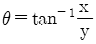
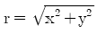
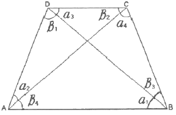
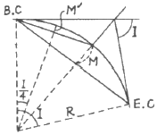
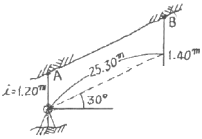
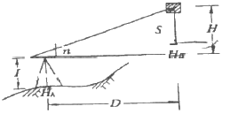
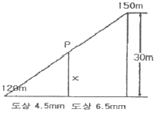

지적기사 (2008-05-11 기출문제)
1과목: 지적측량
1. 지적삼각측량에서 수평각의 1측회의 폐색회의 폐색에서 29초의 오차가 있었다. 그 처리방법으로서가장 옳은 것은?
- 공차외이므로 재측정한다.
- 공차내이므로 각규약조정 계산을 한다.
- 공차내이므로 변규약조정부터 계산한다.
- 오차는 무시할 만 하므로 배부하지 않고 결정한다.
(정답률: 알수없음)

2. 다음 그림의 점 P에서 방위각이 β인 직선

까지의 수 선장 d를 산출하는 식은?
- d=△x cos β-△y sin β
- d=△y cos β-△x sin β
- d=△x sin β-△y cos β
- d=△y sin β-△x cos β
(정답률: 알수없음)
3. 거리 측량을 할 때 발생하는 오차 중 우연오차의 원인이 아닌 것은?
- 테이프의 길이가 표준길이와 다를 때
- 온도가 측정중에 시시각각으로 변할 때
- 눈금의 끝수를 정확히 읽을 수 없을 때
- 측정 중 장력을 일정하게 유지하지 못 했을 때
(정답률: 알수없음)
4. 다음 극좌표와 직각좌표와의 관계식 중 옳지 않은 것은?

- x=r cosθ
- y=r sinθ


(정답률: 알수없음)
5. 지적도근측량의 계산방법에 해당되지 않는 것은?
- 도선법
- 교회법
- 방사법
- 다각망도선법
(정답률: 알수없음)
6. 지적삼각보조측량교회법에 대한 설명 중 틀린 것은?
- 관측은 20초독 이상의 정밀 경위의를 사용한다.
- 수평각 관측은 2대회의 방향 관측법에 의한다.
- 수평각 측각공차는 기지각과의 차가 40초 이하이다.
- 계산 단위는 변의 길이의 경우 cm까지이다.
(정답률: 알수없음)
7. 지적삼각측량에서 수평각의 측각공차에 대한 설명으로 옳은 것은?
- 기지각과의 차는 ±40초 이상
- 삼각형 내각 관측치의 합과 180도와의 차는 ±40초 이내
- 1측회의 폐색차는 ±30초 이상
- 1방향각은 30초 이내
(정답률: 알수없음)
8. 축척 1/1200 인 지역에서 측판측량을 시행할 때 도상에 영향을 미치지 않는 지상거리의 한계는?
- 60mm
- 100mm
- 120mm
- 150mm
(정답률: 알수없음)
9. 지적삼각보조측량을 다각망도선법에 의할 경우 폐색오차를 구하는 식은? (단, n은 폐색변을 포함한 변수임)
- ±10√n초 이내
- ±20√n초 이내
- ±30√n초 이내
- ±40√n초 이내
(정답률: 알수없음)
10. 지적측량을 실시하여야 할 경우에 해당되지 않는 것은?
- 지상건축물을 설계하기 위하여 공사측량을 필요로 하는 경우
- 경계점을 지상에 복원하기 위하여 측량을 필요로 하는 경우
- 임야도에 등록된 토지를 지적도에 옮겨 등록하고자 하는 경우
- 토지가 축척이 다른 지적도에 각각 등록되어 있어 축척변경을 하는 경우
(정답률: 알수없음)
11. 지적측량기준점 등의 제도에 관한 설명으로 옳은 것은?
- 삼각점 및 지적측량기준점은 0.1밀리미터 폭의 선으로 제도한다.
- 지적삼각점은 3밀리미터의 원으로 제도하고 원안에 십자선을 표시한다.
- 지적삼각보조점은 직경 2밀리미터의 원으로 제도하고 원안에 십자선을 표시한다.
- 지적도근점은 직경 1밀리미터, 2밀리미터의 2중원으로 제도한다.
(정답률: 알수없음)
12. 필지를 분할하는 경우 분항후의 면적이 분할전 면적의 8할 이상이 되는 필지의 면적을 측정하는 때에는 분할전 면적의 2할 미만이 되는 필지의 면적을 먼저 측정한 후, 분할 전 면적에서 그 측정된 면적을 빼는 방법에 의할 수 있다. 이러한 방법으로 필지를 분할할 수 있는 기준 면적은 얼마이상인가?
- 4000m2
- 5000m2
- 6000m2
- 7000m2
(정답률: 알수없음)
13. 전자면적측정기에 의한 면적측정에 있어서 도상에서 2회 측정하여 그 교차가 허용면적 이하인 때에는 그 평균치를 측정면적으로 정하는데 허용면적의 계산식은? (단, A는 허용면적, M은 축척분모, F는 2회 측정한 면적의 합계를 2로 나눈 수)
- A=0.0026M√F
- A=0.0232M√F
- A=0.023M√F
- A=0.0262M√F
(정답률: 알수없음)
14. 수평각관측시 경위의의 기계오차 소거방법으로 틀린 것은?
- 회전축에 대하여 망원경의 위치가 편심되어 있어 발생하는 오차는 망원경의 정ㆍ반관측을 평균한다.
- 시준축과 수평축이 직교하지 않아 발생하는 오차는 망원경의 정ㆍ반관측을 평균한다.
- 수평축과 연직축이 직교하지 않아 발생하는 오차는 망원경의 정ㆍ반관측을 평균한다.
- 기포관축과 연직축이 직교하지 않아 발생하는 오차는 망원경의 정ㆍ반관측을 평균한다.
(정답률: 알수없음)
15. 다음 그림과 같은 사각망을 조정하기 위하여 필요한 조건식으로 틀린 것은?

- (α1+β4)-(α3+β2)=0
- (α2+β1)-(α4+β3)=0
- (∑α+∑β)-360°=0
- (α1+β3)-(α3+β1)=0
(정답률: 알수없음)
16. 지적측량기준점표지를 설치할 때 그 점간거리에 대한 기준으로 틀린 것은?
- 지적삼각점표지의 점간거리는 평균 2km 내지 5km로 한다.
- 지적삼각보조점표지의 점간거리는 평균 1km 내지 3km로 한다.
- 지적도근점표지의 점간거리는 평균 50m 내지 300m 이하로 한다.
- 지적위성기준점의 점간거리는 평균 40km 내지 60km로 한다.
(정답률: 알수없음)
17. 다각망도선법에 의한 지적도근측량시 1도선의 점의 수는 몇 점 이하로 제한되는가?
- 10점
- 20점
- 30점
- 40점
(정답률: 알수없음)
18. 축척 1/1200 지적도 지역에서 도곽신축량이 △X1=-0.4mm, △X2=-1.0mm, △Y1=-0.8mm, △Y2=-0.6mm일 경우 도곽선의 보정계수는?
- 1.0026
- 1.0032
- 1.0038
- 1.0044
(정답률: 알수없음)
19. 측판측량방법에 의한 도선법에서 폐색오차가 도상 1mm이고 총 변수가 10일 때 제5변에 배부할 도상거리는?
- 0.4mm
- 0.5mm
- 0.8mm
- 1mm
(정답률: 알수없음)
20. 경계를 지적공부에 등록할 당시 측량성과의 착오로 인하여 경계가 잘못 등록되었을 경우 필요한 측량은?
- 경계복원측량
- 토지분할측량
- 등록사항정정측량
- 등록전환측량
(정답률: 알수없음)
2과목: 응용측량
21. 노선측량에서 이용되는 단곡선에서 M 및 M'를 곡선의 중앙종거라 할 때 다음 중 옳은 것은?

- M은 M'의 약 2배가 된다.
- M은 M'의 약 4배가 된다.
- M은 R의 약 1/3이 된다.
- M'는 R의 약 1/8이 된다.
(정답률: 알수없음)
22. 초점거리 150mm, 축척 1:10000으로 촬영한 연직사진에서 종중복도 50%, 사진의 크기 23×23cm일 때 기선고도비는?
- 0.667
- 0.767
- 0.678
- 0.797
(정답률: 알수없음)
23. 교각 60°, 곡선반지름 100m인 원곡선의 시점을 움직이지 않고 교각 90°로 할 경우 교점까지의 접선길이와 곡선시점(B.C)이 동일한 새로운 원곡선의 반지름은?
- 57.7m
- 73.2m
- 100.00m
- 173.2m
(정답률: 알수없음)
24. 터널내에서 천장에 고정점 A, B를 관측한 결과가 그림과 같을 때 두 지점간의 고저차는?

- 12.65m
- 12.85m
- 22.11m
- 25.10m
(정답률: 알수없음)
25. 촬영고도가 3500m, 사진 I의 주점기선길이 80mm, 사진 Ⅱ의 주점기선길이 84mm일 때 시차차 1.5mm인 그림자의 고저차는?
- 34m
- 44m
- 54m
- 64m
(정답률: 알수없음)
26. 대지(절대)표정이 정확하게 완료되었을 경우 사진모델과 실제지형의 관계로 옳은 것은?
- 대칭
- 합동
- 상사
- 상치
(정답률: 알수없음)
27. 회전주기가 일정한 인공위성에 의한 원격탐측의 특성이 아닌 것은?
- 얻어진 영상이 정사투영에 가깝다.
- 판독이 자동적이고 정량화가 가능하다.
- 넓은 지역을 동시에 측정할 수 있다.
- 어떤 지점이든 원하는 시기에 관측할 수 있다.
(정답률: 알수없음)
28. 레벨의 시준축이 기포관축과 평행하지 않으므로 인한 오차는 다음 중 어떤 방법으로 소거될 수 있는가?
- 후시한 후 곧바로 전시한다.
- 표척을 정확히 수직으로 세운다.
- 전시와 후시의 거리를 같게 한다.
- 표척을 시준선의 좌우로 약간 기울인다.
(정답률: 알수없음)
29. 터널측량의 작업 단계 중 지표에 설치된 중심선을 기준으로 하여 갱문에서 굴착을 시작하여 굴착이 진행됨에 따라 갱내의 중심선을 설정하는 작업은?
- 지표설치
- 지하설치
- 조사
- 예측
(정답률: 알수없음)
30. 그림과 같이 n=13, D=75m, S=1.25m, I=1.30m, HA=50.00일 때 B점의 표고(HB)는?

- 57.8m
- 58.8m
- 59.8m
- 60.8m
(정답률: 알수없음)
31. 노선에서 기본적인 횡단기울기를 설치하는 가장 큰 목적은?
- 차량의 회전을 원활히 하기 위해
- 노면배수가 잘 되도록 하기 위해
- 급격한 노선변화에 대비하기 위해
- 주행에 따른 노면침하를 사전에 방지하기 위해
(정답률: 알수없음)
32. 항공사진측량용 카메라의 특징으로 옳은 것은?
- 초점거리가 짧다.
- 피사각이 크다.
- 렌즈 주변부 광량 감소가 크다.
- 렌즈의 지름이 작다.
(정답률: 알수없음)
33. WGS 84 좌표계는 다음 중 어디에 해당하는가?
- 측지 좌표계
- 극 좌표계
- 적도 좌표계
- 지심 좌표계
(정답률: 알수없음)
34. 1:50000의 지형도에서 주곡선의 간격은 몇 m인가?
- 5m
- 10m
- 20m
- 100m
(정답률: 알수없음)
35. 1:25000 지형도에서 150m와 120m 등고선 사이의 P점이 그림과 같이 각각 도상거리 4.5mm와 6.5 mm 사이에 있을 때 P점의 표고는?

- 120.20m
- 132.27m
- 140.25m
- 150.⑤m
(정답률: 알수없음)
36. 수평각 관측에서 측각오차 중 망원경을 정ㆍ반으로 관측하여 소거할 수 있는 오차가 아닌 것은?
- 시준축 오차
- 연직축 오차
- 연직축 오차
- 편심 오차
(정답률: 알수없음)
37. 초점거리가 153mm이고 경사각이 90°일 때 주점과 등각점의 거리는?
- 50mm
- 1⑤mm
- 153mm
- 183mm
(정답률: 알수없음)
38. 센서에서 얻은 위성영상을 활용하기 위해서 기본적으로 행하여지는 작업과 거리가 먼 것은?
- 기하 보정
- 발사 보정
- 영상 강조
- 망 조정
(정답률: 알수없음)
39. 원곡선의 접선기리가 50m, 교각이 40°일 때 곡선장은?
- 137.37m
- 59.59m
- 95.91m
- 47.94m
(정답률: 알수없음)
40. 다음 중 지성선에 대한 설명으로 옳지 않은 것은?
- 능선은 지표면의 가장 높은 곳을 연결한 선으로 분수선이라고도 한다.
- 합수선은 지표면의 가장 낮은 곳을 연결한 선으로 계곡선이라고도 한다.
- 경사변환선은 동일 방향의 경사면에서 경사ㅑ의 크기가 다른 두 면의 교선을 말한다.
- 최대경사선은 지표상 임의의 한 점에 있어서 그 경사가 최대로 되는 방향을 표시한 선을 말하며 등고선과 수평을 유지한다.
(정답률: 알수없음)
3과목: 토지정보체계론
41. 다음 중 토지정보체계의 공간데이터 관리에 필요한 메타데이터(metadata)에 관한 설명으로 가장 관련이 적은 것은?
- 데이터의 내용, 품질, 조건 및 특징 등을 저장한 데이터로 데이터의 이력서이다.
- 데이터의 공유를 위해서는 메타데이터의 표준화가 필요하다.
- 속성정보에 대한 정보를 포함하지 못하여 계속적인 기술개발이 필요하다.
- 데이터의 활용과 유통을 용이하게 한다.
(정답률: 알수없음)
42. 지적재조사사업으로 기대되는 효과와 거리가 먼 것은?
- 지적불부합지 문제 해소
- 토지의 경계복원력 향상
- 국가재정 확충
- 능률적인 지적관리체제로 개선
(정답률: 알수없음)
43. 국가지리정보체계의 구축 및 활용 등에 관한 법률에 의한 기초적인 주요 지리정보로 볼 수 없는 것은?
- 행정구역
- 교통
- 지적
- 개별공시지가
(정답률: 알수없음)
44. 공간데이터를 구축하기 위한 자료 취득 방법과 거리가 먼 것은?
- 기존 지형도를 이용하는 방법
- 지상 측량에 의한 방법
- 항공사진 측량에 의한 방법
- 통신장비
(정답률: 알수없음)
45. 다음 중 토지정보시스템의 주된 구성요소로만 나열한 것은?
- 조직과 인력, 하드웨어 및 소프트웨어, 자료
- 하드웨어 및 소프트웨어, 통신장비, 네트워크
- 자료, 보안장치, 시설
- 지적측량, 조직과 인력, 네트워크
(정답률: 알수없음)
46. 한국토지정보시스템(KLIS)의 구성에 해당되지 않는 것은?
- 지적공부관리시스템
- 지적측량성과작성시스템
- 부동산등기관리시스템
- 민원발급관리시스템
(정답률: 알수없음)
47. 지적전산자료의 이용에 관한 설명으로 옳은 것은?
- 시ㆍ군ㆍ구 시ㆍ군ㆍ구 단위의 지적전산자료를 이용하고자 하는 자는 소관청 또는 도지사의 승인을 얻어야 한다.
- 시ㆍ도 단위의 지적전사자료를 이용하고자 하는 자는 시ㆍ도지사 또는 행정안전부장관의 승인을 얻어야 한다.
- 전국 단위의 지적전사자료를 이용하고자 하는 국토해양부장관의 승인을 얻어야 한다.
- 심사 및 승인을 거쳐 지적전사자료를 이용하고자 하는 사용료를 면제한다.
(정답률: 알수없음)
48. 다음 중 관계형 DBMS의 질의어는?
- SQL
- DLL
- DLG
- COGO
(정답률: 알수없음)
49. 전산정보처리조직에서 사용하는 토지고유번호의 구성은?
- 행정고역코드 10자리, 대장구분 1자리, 본번 2자리, 부번 3자리 합계 16자리로 구성
- 행정고역코드 10자리, 대장구분 1자리, 본번 3자리, 부번 4자리 합계 18자리로 구성
- 행정고역코드 10자리, 대장구분 1자리, 본번 4자리, 부번 4자리 합계 19자리로 구성
- 행정고역코드 10자리, 대장구분 2자리, 본번 4자리, 부번 5자리 합계 21자리로 구성
(정답률: 알수없음)
50. 지적공부의 등록사랑 중에서 토지소유자에 관한 사항에 잘못이 있어 등록사항을 정정하는 경우 확인자료에 해당되지 않는 것은?
- 등기필증
- 토지대장 및 매매계약서
- 등기부등본
- 등기관서에서 제공한 등기전산 정보자료
(정답률: 알수없음)
51. 공간정보의 위상관계의 특성과 관계가 먼 것은?
- 인접성
- 연결성
- 단순성
- 포함성
(정답률: 알수없음)
52. 다음 중 데이터베이스 관리 시스템(DBMS)의 기본 기능과 거리가 먼 것은?
- 정의기능
- 분석기능
- 제어기능
- 조작기능
(정답률: 알수없음)
53. 래스터데이터의 특징에 대한 성명으로 틀린 것은?
- 벡터데이터에 비해 상대적으로 데이터 구조가 단순하다.
- 입력되는 자료의 양이 많아 자료의 처리와 분석에 시간이 많이 걸린다.
- 위상에 관한 정보가 제공되므로 관망분석과 같은 다양한 공간분석이 가능하다.
- 격자구조에서 각각의 격자는 격자 내에 포함된 주제와 관련된 하나의 수치값만을 저장한다.
(정답률: 알수없음)
54. 지적정보의 유형과 거리가 먼 것은?
- 위치정보
- 지질정보
- 도형정보
- 속성정보
(정답률: 알수없음)
55. 벡터데이터의 득징에 대한 설명이 아닌 것은?
- 확대축소하여도 선이 매끄럽다.
- 자료의 표준화를 위해 geoTIFF가 개발되었다.
- 위상구조를 가질 수 있다.
- 객체의 크기와 방향선에 대한 정보를 가지고 있다.
(정답률: 알수없음)
56. 두 선이 연결될 때 한 점에 엉뚱한 좌표가 입력되어 튀어나온 상태의 디지타이징(또는 벡터편집) 오류로 맞는 것은?
- Over Lapping
- Sliver Polygon
- Spike
- Under Shoot
(정답률: 알수없음)
57. 토지정보시스템의 구축효과에 해당하지 않는 것은?
- 고용증대
- 정보의 공유화
- 업무의 신속화
- 원활한 의사결정의 지원
(정답률: 알수없음)
58. 도형정보의 입력방법 중 스캐닝 방식의 특징에 해당되지 않는 것은?
- 손상된 도면의 경우 스캐닝에 의한 인식이 원활하지 못하다.
- 복잡한 도면을 입력할 경우에 작업시간이 단축된다.
- 레이어별로 나뉘어져 입력되므로 소요비용이 저렴하다.
- 특정 주제만을 선택하여 입력시킬 수 없다.
(정답률: 알수없음)
59. 경계점좌표등록부 비치지역의 지적도면을 전산화하는 방법으로 가장 적합한 것은?
- 등사방식
- 스캐닝방식
- 디지타이징방식
- 좌표입력방식
(정답률: 알수없음)
60. 다음 중 도형자료를 컴퓨터에 입력할 때 발생할 수 있는 오차와 가장 관련이 없는 것은?
- 위상구조화에 따른 오차
- 좌표 독취 과정에서의 오차
- 벡터자료 변환 과정에서의 오차
- 기계적인 오차
(정답률: 알수없음)
4과목: 지적학
61. 현행 지적법상ㆍ경계의 설정, 등록에 관한 기본 원칙과 관계없는 것은?
- 영속성의 원칙
- 경계국정주의
- 경계불가분의 원칙
- 경계직선주의
(정답률: 알수없음)
62. 지목을 설정할 때 토지이용 형태로서 착안해야 할 사항이 아닌 것은?
- 토지의 주된 사용목적
- 용도의 경중
- 일시적, 암시적 토지 이용
- 토지이용계획
(정답률: 알수없음)
63. 토지조사사업시에 소유자에 관하여는 사정(査定)을 하였는데 이 때 사정(査定)의 뜻으로 볼 수 있는 것은?
- 원래의 소유권을 재확인
- 원래의 소유을 공증
- 원래의 소유권과 무주토지 소유권을 확정
- 원래의 소유권을 소멸하고 새로이 소유권 취득
(정답률: 알수없음)
64. 대한제국시대에는 관계(官契)를 3편으로 발급하였다. 보존 방법으로 틀린 것은?
- 제1편(片)은 본아문에서 보존하였다.
- 제2편(片)은 소유자가 보존하였다.
- 제3편(片)은 지방관청에서 보존하였다.
- 제2편(片)은 탁지부에서 보존하였다.
(정답률: 알수없음)
65. 우리나라 지적제도의 기본이념에 해당하는 것은?
- 지적민정주의
- 인적편성주의
- 지적형식주의
- 지적비밀주의
(정답률: 알수없음)
66. 토지조사사업의 사정에 불복하는 자는 공시기간 만료 후 최대 몇 일 이내에 고등토지조사위원회에 재결을 신청하여야 했는가?
- 10일
- 30일
- 60일
- 90일
(정답률: 알수없음)
67. 다음 중 우리나라 지적제도에 있어 토지등록의 제원칙이 아닌 것은?
- 국정주의
- 실질적 심사주의
- 직권주의
- 형식적 심사주의
(정답률: 알수없음)
68. 다음의 지적제도 중 토지소유권 보호를 주목적으로 하는 것은?
- 세지적
- 법지적
- 다목적지적
- 종합지적
(정답률: 알수없음)
69. 대한제국시대에 양전을 위해 설치된 최초의 지적행정관청은?
- 양지아문
- 지계아문
- 탁지부
- 임시재산 정리국
(정답률: 알수없음)
70. 지적제도에 대한 설명으로 가장 거리가 먼 것은?
- 효율적인 토지관리와 소유권 보호를 목적으로 한다.
- 국가적 필요에 의한 제도이다.
- 토지에 대한 물리적 현황의 등록ㆍ공시제도이다.
- 개인의 권리 보호를 위한 제도이다.
(정답률: 알수없음)
71. 1970년에 공포된 지적측량사규정 시행 당시 국가공무원으로서 그 소속 관서의 지적측량 사무에 종사하는 자에 대한 명칭은?
- 대행측량사
- 상치측량사
- 감정측량사
- 지정측량사
(정답률: 알수없음)
72. 토지에 대한 권리를 인정하기 위하여 지적측량을 실시하지 아니하고는 등록을 할 수 없도록 하였다면 다음 중 어느 등록제도에 해당하는가?
- 소극적 등록제도
- 적극적 등록제도
- 처분적 등록제도
- 직권적 등록제도
(정답률: 알수없음)
73. 다음 중 지적공부의 효력으로 틀린 것은?
- 공적인 기록이다.
- 등록된 정보는 모두 공신력이 있다.
- 등록 정보에 대한 공시력이 등록이다.
- 토지에 대한 사실관계의 등록이다.
(정답률: 알수없음)
74. 현행 우리나라의 지적제도에서 인정하고 있는 것은?
- 사실심사권
- 권원보증권
- 공증권
- 재결권
(정답률: 알수없음)
75. 조선시대의 속대전(續大典)에서 토지의 위치로서 동서남북의 경계를 표시하는 것을 무엇이라고 하는가?
- 자번호
- 사주(四柱)
- 사표(四標)
- 주명(主名)
(정답률: 알수없음)
76. 토지조사사업 당시 일필지 조사 사항의 업무가 아닌 것은?
- 지주의 조사
- 지목의 조사
- 지번의 조사
- 분쟁지의 조사
(정답률: 알수없음)
77. 토지조사사업 당시 재결기관으로 옳은 것은?
- 임시 토지조사국
- 고등토지조사위원회
- 부와 면
- 임야심사위원회
(정답률: 알수없음)
78. 다음 중 지목의 결정에 있어서 비슷한 규모의 도로와 철로가 교차하는 지점의 지목설정으로 가장 관련이 있는 것은?
- 주지목추종의 원칙
- 용도경중의 원칙
- 일필일목의 원칙
- 등록선후의 원칙
(정답률: 알수없음)
79. 동일한 지번 설정지역내에서 최종 지번이 1075일 때 지번 545가 분할되어 1076, 1077로 표시된다면 이런 부번 방식은?
- 분수식 지번제도
- 기번식 지번제도
- 자유식 지번제도
- 사행식 지번제도
(정답률: 알수없음)
80. 백문매매(白文賣買)에 대한 설명 중 가장 관련이 깊은 것은?
- 오늘날의 권리증에 해당된다.
- 입안을 받지 않은 계약서를 말한다.
- 조선건국 초기에 성행되었던 토지등기제도의 일종이다.
- 구문기에서 소유자란 없는 것을 뜻한다.
(정답률: 알수없음)
5과목: 지적관계법규
81. 축척변경을 한 결과 감소된 면적에 대하여 교부해야 할 청산금 총액이 부족할 경우 그 부족액을 부담해야 할 자는?
- 당해 지방자치단체
- 도지사
- 증가된 면적의 토지소유자
- 국토해양부장관
(정답률: 알수없음)
82. 토지소유자 또는 이해관계인이 지적측량성과에 대하여 다툼이 있어 지적측량적부심사를 받고자 한다. 이 때 지적측량적부심사를 청구하는 절차로 옳은 것은?
- 측량시행기관에서 중앙지적위원회에 청구한다.
- 관할 소관청장을 거쳐 도지사에게 청구한다.
- 관할 시ㆍ도지사를 거쳐 지방지적위원회에 청구한다.
- 관할 소관청장을 거쳐 중앙지적위원회에 청구한다.
(정답률: 알수없음)
83. 중앙지적위원회의 회의에 대한 설명으로 틀린 것은?
- 위원장은 중앙지적위원회의 회의를 소집하고 그 의장이 된다.
- 위원회는 관계인을 출석하게 하여 의견을 들을 수 있다.
- 회의는 위원장 및 부위원장을 포함한 재적위원 과반수의 출석으로 개의한다.
- 지적기술자의 징계에 있어서 위원이 징계대상자와 8촌 이내의 친족관계에 있는 경우 당해 안건의 심의에 참석할 수 없다.
(정답률: 알수없음)
84. 다음 중 소관청이 관할 등기관서에 등기촉탁을 하는 사유에 해당되지 않는 것은?
- 등록사항의 직권정정
- 축척변경
- 행정구역변경으로 인한 지번변경
- 신규등록
(정답률: 알수없음)
85. 다음 중 지적법상 ‘경계’에 대한 정의가 올바른 것은?
- 토지 위에 설치된 담장
- 필지별로 경계점간을 직선으로 연결하여 지적공부에 등록한 선
- 주요 지형ㆍ지물에 의하여 구획된 지표상의 경계
- 전ㆍ답 등에 구획된 둑
(정답률: 알수없음)
86. 미등기건물의 소유권 보존등기 신청을 할 수 없는 경우는 다음 사항 중 어느 것인가?
- 공유자 1인이 자기소유지분만 보존등기를 신청하는 경우
- 건축물대장등본에 의하여 소유자로서 등록되어 있는 것을 증명하는 자가 신청하는 경우
- 판결에 의하여 자기의 소유권을 증명한 자가 신청하는 경우
- 수용으로 인하여 소유권을 취득하였음을 증명하는 자가 신청하는 경우
(정답률: 알수없음)
87. 토지거래계약에 관한 허가구역에서 토지거래계약 허가 신청이 불허가 처분된 경우 토지소유자가 취할 수 있는 권리구제 수단으로 적합한 것은?
- 국토지리정보원장에 대한 이의 신청 또는 매수청구
- 국토해양부장관에 대한 이의 신청 또는 매수청구
- 시장ㆍ군수 또는 구청장에게 매수청구
- 국토이용 계획심의회에 대한 이의 신청 또는 국토해양부장관에 대한 매수청구
(정답률: 알수없음)
88. 지적도면을 재작성할 수 있는 경우에 대한 설명으로 틀린 것은?
- 장기간 사용으로 도면이 손상되어 토지의 표시가 분명하지 않을 때
- 도곽선 신축량이 0.3mm에 달했을 때
- 토지의 빈번한 이동정리로 인하여 도면의 경계 등을 식별하기 곤란한 때
- 행정구역의 변경 등으로 1장의 도면에 2 이상의 동ㆍ리가 등록되어 있을 때
(정답률: 알수없음)
89. 국토의 계획 및 이용에 관한 법률에서 정하고 있는 국토의 용도지역구분이 아닌 것은?
- 자연환경보전지역
- 준도시지역
- 농림지역
- 관리지역
(정답률: 알수없음)
90. 토지이동에 대한 대위신청을 할 수 없는 자는?
- 공공사업 등으로 인하여 학교용지의 지목으로 되는 토지의 경우에는 그 사업시행자
- 국가가 취득하는 토지의 경우에는 그 토지를 관리하는 국가기관
- 민법 제404조의 규정에 의한 채권자
- 주택법에 의한 공동주택의 부지는 인접토지소유자
(정답률: 알수없음)
91. 등기관의 과오로 인하여 착오된 등기사항을 발견하였을 때 이를 정정하기 위한 등기는?
- 경정등기
- 보존등기
- 촉탁등기
- 회복등기
(정답률: 알수없음)
92. 등기부의 양식에서 등기번호란에 기재하는 것은?
- 등기부의 순서
- 각 토지 또는 각 건물대지의 지번
- 토지의 위치
- 등기용지의 편철순서
(정답률: 알수없음)
93. 다음 중 소관청이 직권으로 조사ㆍ측량하여 지적공부에 등록된 사항을 정정할 수 있는 경우가 아닌 것은?
- 지적측량성과와 다르게 정리된 경우
- 지적공부의 등록사항이 잘못 입력된 경우
- 지적공부의 재작성 당시 잘못 정리된 경우
- 일필지 면적의 증감으로 경계의 위치가 잘못 등록된 경우
(정답률: 알수없음)
94. 지적공부에 등록된 토지소유자의 변경사항을 정리하고자 할 경우 다음 중 무엇에 의하는가?
- 등기필증
- 지적공부등본
- 법원의 확정판결서
- 지적공부정리결의서
(정답률: 알수없음)
95. 지적공부 등록사항 중 경계점좌표등록부에 등록되지 않는 사항은?
- 지목
- 경계점의 좌표
- 토지의 소재
- 지번
(정답률: 알수없음)
96. 일반적인 지번의 부여방법에 대한 설명으로 옳지 않은 것은?
- 지번은 북서에서 남동으로 순차적으로 부여할 것
- 합병의 경우에는 합병대상 지번 중 선순위의 지번을 그 지번으로 하되, 본번으로 된 지번이 있는 때에는 본번 중 후순위의 지번을 합병후의 지번으로 할 것
- 신규등록 및 등록전환의 경우에는 그 지번부여지역안에서 인접토지의 본번에 부번을 붙여서 지번을 부여할 것
- 분할의 경우에는 분할 후의 필지 중 1 필지의 지번은 분할전의 지번으로 하고, 나머지 지번을 본번의 최종 부번을 다음 순번으로 부번을 부여할 것
(정답률: 알수없음)
97. 지적법에 의한 과태료를 부과하고자 할 때에는 기간을 정하여 과태료처분대상자에게 구술 또는 서면에 의한 의견진술의 기회를 주는데, 이 때 의견진술 기간의 기준으로 옳은 것은?
- 5일 이상
- 7일 이상
- 10일 이상
- 15일 이상
(정답률: 알수없음)
98. 도시관리계획 결정으로 주거지역을 세분화하여 지정한 지역 및 설명으로 옳은 것은?
- 전용주거지역:양호한 주거환경을 보호하기 위하여 필요한 지역
- 일번주거지역:주거기능을 위주로 일부 상업기능 및 업무기능을 보완하기 위하여 필요한 지역
- 준주거지역:편리한 주거환경을 조성하기 위하여 필요한 지역
- 일반준주거지역:근린지역에서의 일용품 및 서비스의 공급을 위하여 필요한 지역
(정답률: 알수없음)
99. 측량및지령공간정보기사의 국가기술자격으로 지적측량을 실시한 경우 이에 해당되는 벌칙은?
- 2년 이하의 징역 또는 1000만원 이하의 벌금
- 1년 이하의 징역 또는 500만원 이하의 벌금
- 200만원 이하의 과태료
- 50만원 이하의 과태료
(정답률: 알수없음)
100. 다음 중 지적서고의 연중 평균온도 및 습도에 대한 규정으로 옳은 것은?
- 섭씨 20±5도, 60±5퍼센트
- 섭씨 25±5도, 60±5퍼센트
- 섭씨 20±5도, 6545퍼센트
- 섭씨 25±5도, 60±5퍼센트
(정답률: 알수없음)